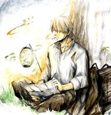

Antonio Machado
Poesías Completas
Editorial Austral
Todas las notas con este subrayo significa que no hay comentarios al respecto
Notas Preliminares
Notas preliminares, escritas por: Manuel Alvar
Parece querer trazar la dificultad que subyace en situar al poeta en un movimiento:
Si bien rompe con la tradición no se acopla al compas moderno.
Manuel parece querer aludir a partir de un extracto de Juan de Mairena:
La poesía de Bécquer [...], tan clara y transparente, donde todo parece escrito para ser entendido, tiene su encanto, sin embargo, al margen de la lógica. Es palabra en el tiempo, el tiempo psíquico irreversible, en el cual nada se infiere ni se deduce [...]. Recordemos hoy a Gustavo Adolfo, el de las rimas pobres, la asonancia indefinida y los cuatro verbos por cada adjetivo definidor. Alguien ha dicho, con indudable acierto: Bécquer, un acordeón tocado por un ángel. Conforme: el ángel de la verdadera poesía
Juan de Mairena — Pag. 204 Colección Austral
Antonio Machado es una unción becqueriana en su espíritu y forma
La figura de la Tarde se figura en 36/96 poemas adjuntos
Manuel alude a una especie de Idealismo semántico que figura en la poesía:
Un contenido neutro se ha transformado: tarde ya no es la referencia cronológica que definen los diccionarios, sino esa especial dependencia que se establece entre el hombre y el cosmos, el misterio que está más allá del mundo sensible y que, sin embargo, nos atrae y nos condiciona. Estamos acercándonos a la esencia de los mitos: de una parte, la explicación en la naturaleza de nuestro propio destino; de otra, la expresión del misterio por un lenguaje simbólico, cuando nos resulta insuficiente el lenguaje de la lógica. Si el mito, se ha dicho, nos explica el significado de la vida, la poesía se convierte en mito tan pronto como nos ayude a entender la metahistoria de nuestra propia existencia
Notas: Si bien el lenguaje poético versa necesariamente fuera del paradigma semántico, esta forma sustantivar su signo/referente en torno al hombre/cosmos o meta-historia solo porque burla el significante/significado solo nos habla de la forma en la que esta manifiesta su corpus y para nada lo que Manuel intenta señalar con la poesía.
17 ene 2025 - Gabriel J.
-
“Pero el ultimo significado del misterio siempre queda inasequibles; poseemos atisbos, intuiciones, adivinaciones, pero nada más.” — Manuel Alvara p. 18
Nota: ¿Jugamos a las “adivinanzas” cuando escudriñamos textos poéticos? No lo creo
-
En la pagina 19 Manuel nos habla de una presunta circunscripcion de las connotaciones que el autor esboza en cada palabra-clave.
-
Manuel alude a una “esfericidad” del “mundo” de Machado, es decir, una circunscripción con múltiples significantes que enriquecen el texto, a diferencia de bequer que por así decirlo describía las formas en las que se encontraba con su poesía, machado recogió esto y lo hecho en cara a la realidad, para “transformarla”. (Pag. 21)
-
En la pagina 24 se nos menciona que Machado sufre un cambio de perspectiva debido a un texto “Consideraciones sobre el desarrollo de la literatura moderna” tuvo un cambio abandonando lo “lírico” e individualista a lo colectivista.
-
Conceptismo y Machado: “La metáfora es ornato que cae sin mucho esfuerzo en el conceptismo en la ruina de la poesía para Machado”
-
El “adjetivo definidor” que estatuye el sustantivo no es si no una forma de “espiritualizar” el verso, en otras palabras; Un estado espiritual del poeta que se identifica con el mundo que lo rodea Parece ser que Machado se disgregaba de ello según, Manuel Alvara
-
El estilo es un sentimiento del mundo, todo estilo verdadero es la reducción a una perspectiva humana del mundo eterno Malraux - Les voix du silence
-
Porque Antonio Machado conjunto a otros autores supieron dar belleza en paisajes de Soria ahí donde la fotografía no alcanzaba.
-
Una vez desvinculado de lo anterior Manuel parece abordar un “impresionismo poético” por parte Machado Como si Manet le hubiera prestado una paleta en la que dominaran unos tonos claros y fuera el temblar de la luz, cambiante…
Cuando Machado canta, cada elemento es en su verso una pincelada autónoma, independiente de cuanto la rodea. Pero el conjunto de esos elementos aislados hace una criatura superior inconfundible e inolvidable. De ahí también el predominio del nombre sobre cualquier otro componente del discurso: no se trata de descubrir acciones, sino de presentar realidades; de hacernos ver el desarrollo de procesos, sino de mostrarnos criaturas existentes; de narrar, sino de nombrar. Por eso, una y otra vez repetirá idéntica realidad, porque idénticas son las presencias con que se tropieza: álamos verdes, márgenes del río, zarzales florecidos, humildes violetas, ciruelos…… Pag 32
Nota: Imagino que esta linea es una “diferencia” entre los tintes berqueristas antes mencionados, en Bequer recordemos en su poema:
III (42): […]Ideas sin palabras/ Palabras sin sentido/ Cadencias que no tienen ni ritmo ni compás. Memoras y deseos de cosas que no existen / Accesos de alegría/ Impulsos de llorar […] tal es la inspiración…Gigante voz que el caos ordena en el cerebro y entre las sombras hace la luz aparecer […] Rimas - Gustavo Adolfo Bequér - Pag.87
Notas: Que estatuye antes que el nombre, la narración del nombres, Bequer define a sus ideas poéticas en la teoría becqueriana como una confluencia entre el sujeto poético por un lado inspirado “palabras sin sentido e ideas sin palabras” y por otro lado racional “Gigante voz que el caos ordena”. Es presente este pensamiento en muchos de sus poemas, y vemos aquí lo que resalta Manuel, de “mostrarnos criaturas existentes”. Mientras que Bequer se detiene mucho en esta idea originaria de la actividad poética Machado recoge esa idea pero no la traza ni la inunde si no que la instaura en el momento en el que lo lleva a la praxis (lo nombra) aquello por que Bequer lucha Machado pasa directamente y hace poesía.
Todo parece apuntar Manuel en que la poesía de Machado sufre un cambio drástico tras la muerte de su amada esposa, llego a tener pensamientos suicidas -> Machado resignación / esperanza.
La nueva “Epica” de Machado influenciado por los ídolos sorianos, un enraizamiento clásico no nacionalista, la acrónica, no la temporal; la de los frutos, no la de la tierra.
- Los versos de Andalucía no son los versos individualistas y personalistas de Castilla, esos versos los mira “….con los ojos del pueblo”.
- Las nuevas canciones no dicen nada nuevo de Machado lejos de lo que ya sabíamos, son, sí, la presencia activa del pueblo en su quehacer .
- Manuel pasa a suscribir las distintas influencias de Machado en sus textos
- Desde de Saint-Beuve (1804 - 1884) se dice que la poesía es obra de otro yo
- Todos somos no otro, si no muchos yo’s. Manuel dice que habla del hombre que fue Machado como una multitud fractal: el intimista, el impresionista, el mitólogo etc..
- Manuel se distancia de las consideraciones filosóficas para presentar la obra de Antonio Machado.
- Antonio Machado abandono la filología por la filosofía asistiendo a las clases de Henri Bergson repite el mismo proceso y las listas seran ul
Biografía y Prólogo
Contexto, fechas, introduccion general
- Nacido en Sevilla; 07/1875 en el celebre palacio de Las Dueñas
- A los 8 años se traslado a Madrid y estudio en la Institución libre de Enseñanza
- Viajes entre España y Francia
- En 1907 obtuvo una cátedra de lengua francesa, profesados en 5 años en Soria
- Allí se caso y murió su esposa; Se traslado a Baeza, donde residió hasta el final.
Contexto artístico
- Machado viajo a sus 24 años a Francia y España (Madrid y París - 1899)
- París es un “Affaire Dreyfus” en política. Simbolismo en poesía, Impresionismo en pintura
- Conoció a Oscar Wilde & Jean Moréas y Antole France
- Madrid - París (1902) conoció a Rubén Darío
- 1903 - 1910 Diversos viajes por España
- Soria a París (1910) Asistió a un curso de Henri Bergson en el Colegio de Francia
- 1912 a 1919 desde Baeza a las fuentes del Guadalquivir y a toda Andalucía.
- 1919 La mitad del tiempo la paso en Segovia, y en Madrid la otra mitad.
..Nuestra incapacidad para fallar con justicia en causa propia estriba también en la merma de simpatía por nuestra obra y en la enorme distancia que media entre el momento creador y el crítico. En el primero coincidíamos con la corriente de la vida, cargada de realidades virtuales que acaso no llegan nunca a actualizarse, pero que sentimos como infinitamente posibles; en el segundo estamos fuera de esta misma corriente, y aun fuera de nosotros, obligados a juzgar, a encerrar y distribuir las vivas aguas en los rígidos cangilones de las ideas ómnibus, a evaluar en moneda corriente lo más ajeno a toda mercadería. Es muy frecuente -casi la regla- que el poeta eche a perder su obra al corregirla. La explicación es fácil: se crea por intuiciones; se corrige por juicios, por relaciones entre conceptos. Los conceptos son de todos y se nos imponen desde fuera en el lenguaje aprendido; las intuiciones son siempre nuestras. Juzgarnos o corregirnos supone aplicar la medida ajena al paño propio..
Cita/Antonio Machado - Poesías Completas P.72
Baeza, 20 de abril 1917
A Soledades
Publicación: 1903
Escritas: 1899 - 1902
…Pensaba yo que el elemento poético no era la palabra por su valor fónico, cromático, línea, complejo de sensaciones, sino una honda palpitación del espíritu; lo que pone en el alma si es que algo pone , o lo que se dice, si es que algo dice, con voz propia, en respuesta al contacto del mundo.Y aún pensaba que el hombre puede sorprender algunas palabras de un íntimo monólogo, distinguiendo la voz viva de los ecos inertes; que puede también, mirando hacia dentro, vislumbrar las ideas cordiales, los universales del sentimiento…. Cita/Antonio Machado - Poesías Completas P.73
- No era el propósito de la sistematización del libro, pero era la estética concebida por Machado en ese entonces.
- 1907 esta obra fue refundida con adición de nuevas composiciones que no añadían nada sustancial
1917
A Campos de Castilla
Publicación: 1912
…Cinco años en la tierra de Soria, hoy para mí sagrada -allí me casé, allí perdí a mi esposa, a quien adoraba, orientaron mis ojos y mi corazón hacia lo esencial castellano. Ya era, además, muy otra mi ideología. Somos víctimas -pensaba yo- de un doble espejismo. Si miramos afuera y procuramos penetrar en las cosas, nuestro mundo externo pierde en solidez, y acaba por disipársenos cuando llegamos a creer que no existe por sí, sino por nosotros. Pero si, convencidos de la íntima realidad, miramos adentro, entonces todo nos parece venir de fuera, y es nuestro mundo interior, nosotros mismos, lo que se desvanece. ¿Qué hacer entonces? Tejer el hilo que nos dan, soñar nuestro sueño, vivir; sólo así podremos obrar el mila-gro de la generación. Un hombre atento a sí mismo y procurando auscultarse ahoga la única voz que podría escuchar: la suya; pero le aturden los ruidos extraños ¿Seremos, pues, meros espectadores del mundo? Pero nuestros ojos están cargados de razón y la razón ana-liza y disuelve. Pronto veremos el teatro en ruinas, y, al cabo, nuestra sola sombra proyectada en la escena. Y pensé que la misión del poeta era inventar nuevos poemas de lo eterno humano, historias animadas que, siendo suyas, viviesen, no obstante, por sí mismas..
Cita/ Antonio Machado Poesías Completas P.74
- La tierra de Alvargonzález proposito de escribir un “romancero”
- Antonio no busca re-introducir un romance caballeresco o heroico, su romance estaria focalizado en el “pueblo”.
1917
A Segunda edición de Soledades, galerías y otros poemas
Publicación: 1907
- Machado se enfrento a las corrientes militantes contra toda labor constructora, coherente y lógica (Nietzscheanos, pragmatistas, humanistas y bergsorianos)
- El arte sufría de cierta tendencia subjetivista y la poesía se atomizaba en un cantar para si mismo (véase “Mind cure” focalizado en Whitman)
- Machado se inspiró durante un tiempo en esa sofistica, pero se distanció.
Toledo, 12 de abril de 1919
…La poesía es la palabra esencial en el tiempo..[…] El pensamiento lógico, que se adueña de las ideas y capta lo esencial, es una actividad des - temporalizadora. Pensar lógicamente es abolir el tiempo, suponer que no existe, crear un movimiento ajeno al cambio, discurrir entre razones inmutables…
Cita/ Antonio Machado -Poesía Completa P.76
.. y hasta de una poesía del intelecto. El intelecto no ha cambiado jamás, no es su misión. Sirve no obstante, a la poesía, señalándole el imperativo de su esencialidad…
Cita/ Antonio Machado -Poesía Completa P.77
- Machado postula que la época moderna de la poesía desde Edgar Allan Poe, gira entorno a 2 imperativos; esencialidad y temporalidad
Soledades
#PI
A excepcion de unos cuantos poemas el libro general divide los poemas en I, II , II para facilitar al usuario la busqueda de poermas concretos que busque la palabra # seguido de PI,PII,PIII etc...
El texto enmaraña 2 formas que el autor ve en la nostalgia de un rostro familiar añorado. En la primera estrofa en los últimos 2 versos
…que en el sueño infantil de un claro día vimos partir hacia un país lejano…
El Viajero (E:1 / V:3 y 4)
Nota: E = Estrofa / V= verso
Focalizado el personaje en el poema, sea ficcional o real (Porqué sabemos que tiene hermano) procede a describir trazos que revelan su cambio y su modo de irrumpir en el texto un cambio de tono.
…y la fría inquietud de sus miradas revela un alma casi toda ausente…
El Viajero (E:2 / V: 3 y 4)
Tras estos tonos grises, se procede a describir “El rostro del hermano se ilumina
suavemente”
Y hay ciertos versos interrogativos que revelan las razones por el cual se enciende
esta llama esperanzada.
¿Floridos desengaños dorados por la tarde que declina? (E:4 / V: 2 y 3)
¿Recientes desencantos rechazados en las tardes?
¿Ansias de vida nueva en nuevos años? (E:4 /
V:4)
¿Ganas de comenzar una nueva vida en los posteriores años?
¿Lamentara la juventud perdida? (E:5 /
V:1)
¿Tendrá arrepentimientos?
¿La blanca juventud nunca vivida teme,
que ha de cantar ante su puerta? (E:5 / V3 y 4)
¿Siente apatía
por constantes recriminaciones a si mismo de no haber vivido una “buena” juventud?
Todo este cuestionamiento para terminar: “…Sonríe al sol de oro de la tierra de un sueño no entrada..” — Es decir, si siente cierta insatisfacción tras aquel sueño no construido y.. — “..y ve su nave hender el mar sonoro, de viento y luz la blanca vela hinchada?…” (E:6) - ve su realidad (su nave) cortar las aguas (es decir, no ve tierra alguna) del mar sonoro (problemas cotidianos) de viento y luz la blanca vela hinchada (Es decir, una nave en dirección y navegación por los mares aun, es decir que no llego a tierra alguna y sigue navegando con la vela hinchada y el viento marítimo)
Así concluye los problemas que terminan en “…El ha visto las hojas otoñales…” (E:7)
Para posteriormente recuperar este recuerdo doloroso de una nostalgia, primero se establece la focalización en el personaje para posteriormente preguntarse el porque del cambio y finaliza, con un leve suspiro hacia “un dolor que añora o desconfía” es decir, o bien extraña o bien desconfía de ser un dolor permisivo, es decir si se puede permitir dicho recuerdo sea doloroso, porque lo extraña sin duda, pero a su ves le duele recordarlo; “el temblor de una lágrima reprime” pues al recordarlo reprime cierta melancolía no antes vivida, lo que provoca: “..y un resto de viril hipocresía en el semblante pálido se imprime”(E:8) como dije antes o bien “desconfía de ser un dolor permisivo” sabe que no “debe” ser doloroso, la “viril hipocresía” ese resto cínico impreso en el “semblante pálido” nos habla de una hipocresía en dicho sentimiento de añoranza hecho dolor o mejor dicho genera una desconfianza por pensarlo así.
Básicamente el texto focaliza el personaje infante (ficticio o real), el recuerdo inocente y posteriormente revela su decadencia anímica, para preguntarse el porqué de dicho desfallecimiento animoso, y terminar en un suspiro nostálgico y hacer de ese recuerdo una dualidad nociva de ser un añoranza hecha dolor y genera un sentimiento de hipocresía por el hecho de recordarlo así. Esto o bien habla del autor mismo, y el hermano configura una ficción que el mismo esculpe y germina para dar rienda suelta a toda esta amalgama de inseguridades o hablamos de un contexto real, de un re encuentro familiar, melancólico y emotivo.
Por ello el poema termina en el silencio “Todos callamos (yo)” en la casa donde “la tristeza del hogar golpea el tic tac del reloj (tiempo)” en donde “nosotros divagamos (Añoramos)” (E:9)
#PII
El poema habla de una conglomeración de personas que Machado a conocido durante sus tantos viajes “…caravanas de tristeza, soberbios y melancólicos borrachos de sombra negra..” (E:2) se encontró con personas tristes y alegres, extasiadas y perdidas también a gente trabajando sus tierras y “…gentes que danzan o juegan, cuando pueden…”(E:4-5) conoció a personas foráneas que “…Nunca, si llegan a un sitio, preguntan a dónde llegan…[…] cabalgan a lomos de mula vieja y no conocen la prisa ni aun en los días de fiesta” (E:5-6)
“Son buenas gentes que viven, laboran, pasan y sueñan y en un día como tantos, descansan bajo tierra” (E:7)
Aquí se nota esa lectura de los versos con “los ojos del pueblo” antes mencionado en las notas preliminares.
#PIII
Un breve texto que resalta la alegría que siente al ver la diversidad de voces de los infantes dar color a los “…rincones de las ciudades muertas..” (E:2) pues el tumulto colegial representa “..algo nuestro de ayer, que todavía vemos vagar por estas calles viejas..” (E:2) vinculado a un concepto del “pueblo” el de los infantes vagando por las calles.
El entierro de un amigo
El propio titulo ya expresa en el terreno en el que estamos, entablando primeramente los versos primeros que denotan un día caluroso y hastío de verano de Julio. Las “…rosas de podridos pétalos”(V:4) ya abren el telón de la inevitable y oscuro andamiaje en el cual el verso reposa, pues estos “..geranios de áspera fragancia…” (V:5) embullen el ambiente del luto que hoy nos concierne, y como un movimiento seco y frío “..descender hicieron el ataúd al fondo de la fosa de los dos sepultureros..” (V:10-11). Entierran al difunto, tras “..golpe, solemne, en el silencio..” (V:14-15) y el difunto sin vida “..sin sombra ya, duerme y reposa larga paz a tus huesos..” (V:20) y brinda su respectivo pésame.
#PV
Una breve reminiscencia hecho poesía, por el texto podemos entender que habla de sus épocas de estudiante en la primaria, por lo que podemos entender “..monotonía de lluvia tras los cristales” (V:3-4) es un día como cualquier otro día monótono, sin embargo se resalta un presunto cartel representado por Caín y Abel personajes de la tradición bíblica, contando el relato del asesinato de Caín. Tras eso resuena “..un coro infantil va cantando la lección;..”(V:13-14) concluyendo el soneto en el mismo verso 3-4. Lo que implica un breve paseo en un día como cualquier otro que fue la vida estudiantil y de infante de Antonio Machado.
#PVI
Varias cosas a analizar, y debo comenzar focalizando una palabra en todo el texto: “Tarde”
| Clara Tarde | V1 / V 42 | Lucidez |
| Tarde de verano / (V2 + “vieja”) | V2 / V 32 | Recuerdo concreto / Recuerdo concreto viejo |
| Tarde muerta | V 8 / V 52 | Cruce del sueño |
| Tarde lenta del lento verano | V 15 | Cristalización de un vago recuerdo |
| Misma Tarde | V 19 | Repetición |
| Lenta Tarde de verano | V 26 | Cristalización de un recuerdo conciso |
| Clara tarde del lento verano | V 39 | Lucidez de un vago recuedo |
El texto introduce un pasaje tranquilo y aparentemente lucido “clara tarde” triste pero soñolienta “tarde de verano” (Concatenación entre el estado de vigilia - onírico) tras algunas figuras oníricas que indican la entrada al mundo del sueño “..abrióse la puerta de hierro mohoso, y al cerrase grave, golpeó el silencio de la tarde muerta..” la figura pasa de ser lucida “tarde clara” a ser difusa “..soñolienta tarde de verano” a ser directamente “muerta” oscurantista, onírica etc. y “….grave golpeó el silencio” al cerrarse la puerta en este mundo del sueño.
La figura poética de “La fuente cantaba” pregunta al interlocutor y se refiere a el como hermano, e introduce a re configuracion de la tarde “…tarde lenta del lento verano..” exhortando el tiempo cristalizado en este mundo de en sueño, la fuente le pregunta si recuerda tal sonido, el cual responde que no, hablando a la fuente como “hermana”. Dice no recordarla, más sabe que dicha copla le es lejana, así que como mínimo le es vagamente familiar.
Fue esta “misma tarde” la tarde cristalizada de dicho sonido vagamente familiar, ese mismo sonido, “..mi cristal vertía como hoy sobre el mármol su monotonía…”Que invadía sobre la monotonía, la fuente pregunta si recuerda aquellos mirtos talares que aromatizaban bellos sonidos que escucha ahora. Y lo mismo pregunta “..rubio color de la llama, el fruto maduro pendía en la rama..” (V:23-24) Fue una misma “..lenta tarde de verano…” y no ya un “lento verano” pues es un recuerdo que paso de ser vago a ser conciso. Y es una tarde lenta o lenta tarde cristalizada pero ya de un verano y no de un “lento verano”.
Le responde el personaje que no lo recuerda esa copla riente, no recuerda esas vagos sonidos lejanos centelleando la tarde de verano. “..Yo sé que tu claro cristal de alegría ya supo del árbol la fruta bermeja; yo sé que es lejana la amargura mía que sueña en la tarde de verano vieja..” (V:31-32) “vieja” solo re afirma mi consideración por esa distancia que se presenta entre el presente sonido de un pasado cristalizado (La fuente sonora que canta versos pasados) y el interlocutor presente (“Tu copla presente es lejana” / “copla riente de ensueños lejanos”)
Seguido de eso, el interlocutor, le exclama a la fuente, que sus “espejos cantores”, hablan solo de “antiguos delirios de amores” más quiere y exige que se le cuente bajo esa “lengua encantada” que cuente su “alegre leyenda olvidada”.
Aquí hago un matiz, para estructurar el texto; desde la V1 - 8 se introduce una línea difusa de un oscuro sueño, tras los V 8 - 26 se introduce la figura de cristalización pasada de un antigua forma de haber vistos esos paisajes atreves de una antigua forma de ver a la poesía, y ahora el interlocutor distante establece una nueva estética que bajo sus coordenadas estos versos son embarres “encantados” de lirismos y “delirios de amores” tal y como establece el texto poético hablamos de una dialéctica del autor consigo mismo, la transfiguración de la “fuente” al darle un genero a una abstracción nos habla de que esta hablando a “La Belleza” concretamente a la estética que Machado anteriormente concebía, y actualmente siente distante. Desde el V 26-36 la fuente intenta hacerle recordar y a pesar de todo quiere oír esas viejas historias empapadas de un lirismos seguramente inocente e idealista.
Tras esto, la fuente le responde que no conoce “…antigua alegría..[…]…solo historias viejas de melancolía….” Fue una “..clara tarde del lento verano…” como dije antes pero ahora la “clara tarde” establece la lucidez del recuerdo mas ahora es vago: “lento verano” debido a que ahora el interlocutor es quien exige que cuente en más detalle sobre esa belleza que tanto embelesa la fuente, pero al exigirlo deberá entonces recordar lo que escondía esos “delirios de amores”
“..Tú venías solo con tu pena, hermano;..” es lo que esconde esos bellos versos, una fría y caduca melancolía, “besaron mi linfa serena” la pena besaba los versos líricos que le hacían sobrellevar las penas “..y en la clara tarde dijeron tu pena…” tras los besos serenos en la “tarde clara” en la lucidez dijeron su pena, pues tras besar “linfas serenas” la pena fue transformada, más allá de la monotonía (Recordemos: “mi cristal vertía como hoy sobre el mármol su monotonía” (V:19-20). Es decir que esos versos mataban la monotonía aun diciendo sus penas que “tus labios ardían”. La sed (la ansia de calmar las penas) que ahora tienen (actualmente) y entonces tenían (anteriormente).
El interlocutor se despide refiriéndose a la fuente así “…la fuente sonora, del parque dormido eterna cantora..” (V:45) es decir del lirismo que cantaba a esos paisajes hoy grisáceos (“parque dormido”) eterna cantora de versos pasados inocentes. “Adiós, para siempre, tu monotonía fuente, es más amarga que la pena mía” (V:48) es decir como dije antes, la forma nueva de ver poesía de Machado hace ver a esos versos de forma vana, cantando a un parque dormido, es decir a unos versos “de alegres leyendas” construcciones poéticas pobres que no le brindan nada y que le saben amargas, mucho más amargas y monótonas qué su actual pena.
Nuevamente retoma lo mismos versos de la primera estrofa para nuevamente trazar el paso del mundo onírico al mundo de la vigilia, cerrando la puerta nuevamente en la “tarde muerta” en la tierra de nadie, en el estado de construcciones poéticas viejas y anticuadas que para Machado actualmente y por aquel entonces le resultan vanas.
#PVII
Una reminiscencia de su lirismo proyectada en el coro de los infantes.
“..Escucho los cantos de viejas cadencias, que los niños cantan cuando en corro juegan..” (V:2-4) recuerda viejos ritmos cuando coros juegan pues “..vierten en coro sus almas que sueñan..” (V:5-6) imbuyen sus sueños y embadurnan el sonido de sus ilusiones mas inocentes “..con monotonías, de risas eternas, que no son alegres, con lágrimas viejas, que no son amargas y dicen tristezas, tristezas de amores de antiguas leyendas..”(V:9-15) una amalgama que confabula las mentes de los infantes, de aburrimientos, risa y tristezas viejas. Y entre dichas “…confusa la historia y clara la pena..” (V:18-19) Confusas emociones tiene clara la pena por la que sus coros cantan “…de viejos amores, que nunca se cuentan…”(V:22-23)de esas vivencias inocentes que seguramente están por vez primera experimentando en su etapa de infantes. “..Cantaba los niños canciones ingenuas, de un algo que pasa y que nunca llega..”(V:33-34) cantaban los niños canciones inexpertas, embadurnadas de un lirismo que pasa, por que en efecto pasa en sus canciones pero nunca llega el día en el que se vuelva cristal “…La fuente de piedra, vertía su eterno cristal de leyenda…”(V:28-30)
Recordemos que antes dijo “…vierten en coro sus almas que sueñan cual vierten sus aguas las fuentes de piedra…”(V:6-8) es decir los niños embadurnan ingenuas canciones de infantes con un lirismo propiamente inocente, una inocencia que experimenta sus “primeras veces” una amalgama emotiva esconde sus labios que cantan, y vierten como agua a una fuente de piedra, y esta cristalizaba esas leyendas hechos sonidos, es decir, conocen y conciben lo que Machado seguramente concibió en esas experiencias contemplativas en sus tiempos de infancia, recordemos que en su primer poema, si asumimos que es ficción la figura presentada y no literalmente su hermano, muy seguramente machado extrañe ese lirismo que ve en los infantes, porque estos cantan canciones ingenuas, inocentes, contemplativas, sin experiencias vividas y solo con los ojos de un niño que se sorprende por todo, cantan “de algo que pasa y nunca llega” esa experiencia animosa que produce la sorpresa y contemplación (que pasa y se desvanece con el tiempo) y que nunca llega (nunca se hace de hecho, se pierde, y como dijo en su primer poema se añora una tierra en un nave que hiende las olas del mar)
Así llegamos al final que resaltaremos otra figura: serena
| Poema | Figura: serena/o | Versos | Concepto |
|---|---|---|---|
| VI | Linfa serena | V 41 | Líquido intimista que alivia penas, besado por los labios del poeta en estado onírico. |
| VII | Agua serena | V 29 | Elemento externo en el que se hunden las manos para alcanzar frutos encantados, en estado de vigilia. |
| VIII | Fuente serena | V 38 | La fuente que sigue contando su cuento, el lirismo que continúa creando leyendas. |
En el poema VI, yo dije: “..Tú venías solo con tu pena, hermano;..” es lo que esconde esos bellos versos, una fría y caduca melancolía, “besaron mi linfa serena” la pena besaba los versos líricos que le hacían sobrellevar las penas y en el poema VII: “..Que tú me viste hundir mis manos puras en el agua serena para alcanzar los frutos encantados..”(V:27-29) esa tarde de lucidez que no tiene flores (experiencias con otras personas) pero si aromas de hierbabuena (experiencias de calor familiar) recuerda hundir sus manos en agua serena (pensamientos y lirismo) para alcanzar los frutos encantados (experiencias contemplativas) “..que hoy en el fondo de la fuente sueñan..” (V:32) los sueños de la fuente vacía, esos vestigios añorados, soñados por la fuente sonora reverberan la fuente limpia en la fría vigilia.
Este breve bosquejo ya da entender 3 transfiguraciones de la misma palabra en los diferentes contextos, en el primero, la fuente nos habla de que los labios del interlocutor la besaron, su linfa su líquido en este caso la linfa denota el sustrato intimista el cual alude, fueron besados por los labios que la figuran, esto fue en el poema donde estábamos en los versos oníricos, es decir interiores, ahora vamos al poema VII donde pasamos a un estado de vigilia y esas “serena” pasa de linfa (interno) a agua (externo) “tu me viste hundir mis manos puras en el agua serena para alcanzar los frutos encantados” ahora para alcanzar lo que fue en el anterior poema “delirios de amores” y ahora son “frutos encantados” hunde las manos en liquido que no es ya linfático (intimista) si no en algo externo, un liquido que no besa si no que agarra o intenta coger ósea hunde en definitiva.
Ahora en la tercera figuración nos dice fuente serena, ya sabemos. Lo que denota “serena” que es básicamente esta alivio sentido que le hace sobre llevar sus penas, entonces “seguía su cuento la fuente serena” solo nos habla de ese lirismo cuentista que sigue haciendo leyendas dichos lirismo.
Nota: En la primera edición (Madrid - 1917) los últimos versos de la estrofa comienza con “Vertía la fuente su eterna conseja” que vendría a denotar lo mismo.
| Figura: Tarde | Verso | Concepto |
|---|---|---|
| Tarde clara casi de primavera | V 6 | Lucidez |
| Tarde de Marzo | V 8 | Vigilia |
| Tarde alegre y clara | V 22 / V 32 | Lucida y Contemplativa |
| Tarde sin flores | V 24 | Sin experiencias vividas |
Tras el poema del sueño, ahora vemos el escenario de forma lucida, “..una pálida rama polvorienta, sobre el encanto de la fuente limpia…” (V: 2-3) ahora la fuente ya no es sonora, de hecho parece no tener nada en ella “..en el fondo sueñan los frutos de oro” (V:4-5) y hay un leve vestigio de lirismo resonando en lo que ahora es polvo, “tarde clara” no cambia su forma ni su intención de abrir el escenario de lucidez, y de hecho en este poema pasamos a estar en primavera y marzo una época mas despierta, y no ya un somnoliento y caluroso verano.
“Tarde de marzo” entonces vendría a ser el estado de vigilia, el estado despierto, espabilado y recto pues es “tibia” y no “calurosa”. “Hálito de abril cercano lleva”(V:9) estando cerca de abril, estando “..solo en el patio silencioso…”(V:10) solitario sin nadie, buscando esos vestigios de lirismo añorados en cierta forma “..buscando una ilusión cándida y vieja…”(V:11) si bien sus antiguos versos ya no le producen nada, sigue buscando de cierta forma ese lirismo en su etapa actual. “…Alguna sombre sobre el blanco muro, algún recuerdo, en el pretil de piedra de la fuente dormido, o, en el aire, algún vagar de túnica ligera..” (V:12-14) y describe esos vestigios tras los cuales nota “…el ambiente de la tarde flota ese aroma de ausencia..”(V:16-17) la falta de estos, es una añoranza animosa de una luz perdida en las cosas, y los bellos versos escritos con anterioridad sobre las mismas los siente distantes.
“..que dice al alma luminosa: nunca, y al corazón: espera” (V:18-19) Que dice a su estado anímico (alma luminosa) que nunca volverá a sentirse como se sintió antes, pero a su esperanza (corazón) le dice espera, que espere para mejores cosas, esto puede vincularse su primer poema.
“..aroma que evoca los fantasmas de las fragancias vírgenes y muertas” (V:20-21) esos vestigios líricos evocan “fantasmas” es decir espectros, generan sensaciones que producen versos fatuos, de emociones contemplativas sin haber experimentado una vitalidad de nada, y se reducen a la admiración de un paisaje. Sin duda podemos vincularlo al primer poema si tomamos esa figura anteriormente hipostasiada del “hermano” que habla de lamentos juveniles que tiene en su etapa adulta, podría decirnos mucho de que Antonio considera que no vivió con la fuerza que el quiso, y concibe esos versos poetizados como amalgamas contemplativas que no hacen nada mas que mirar paisajes y no vivir la vida.
Por eso “vírgenes” porque son “aromas” sin experimentar y “muertas” porque son meramente contemplativas y no vitalicias.
“Sí, te recuerdo, tarde alegre y clara, casi de primavera tarde sin flores..” (V:22-23)
Si recuerda en efecto la lucidez contemplativa (tarde alegre = animosa y clara = lucida) casi de primavera, pero la recuerda sin experiencias vividas (tarde sin flores).
“..Cuando me traías el buen perfume de la hierbabuena..” (V:24) nuevamente regresamos a los aromas, recordando experiencias de otra estilo como el familiar “..que tenía mi madre en sus macetas..”(V:26).
“..Que tú me viste hundir mis manos puras en el agua serena para alcanzar los frutos encantados..”(V:27-29) esa tarde de lucidez que no tiene flores (experiencias con otras personas) pero si aromas de hierbabuena (experiencias de calor familiar) recuerda hundir sus manos en agua serena (pensamientos y lirismo) para alcanzar los frutos encantados (experiencias contemplativas) “..que hoy en el fondo de la fuente sueñan..” (V:32) los sueños de la fuente vacía, esos vestigios añorados, soñados por la fuente sonora reverberan la fuente limpia en la fría vigilia.
Y termina el verso con lo antes mencionado V:22-23
Orillas del Duero
#PX
#PXI
El autor describe un bello paisaje el cual imagina sus caminos, es decir camina por ellos sin dirección alguna, posteriormente dice “En el corazón tenía la espina de una pasión logré arrancármela un día: ya no siento el corazón” (V:9-12) que esta es básicamente el núcleo del poema, la pasión por la naturaleza perdida, y esto lo interconecta nuevamente la figura de la “tarde” que es como la concatenación de un estado a otro, en este caso de uno animoso a uno triste y desolado y termina el poema implorando “Aguda espina dorada, quien te pudiera sentir en el corazón clavada ” (V:22-24)
#PXII
“No te verán mis ojos; mi corazón te aguarda” básicamente no verán sus ojos lo que recuerda con firmeza en sus memorias.
#PXIII
| Figura:Tarde | Versos | Concepto |
|---|---|---|
| Tarde de Julio | V 12 | Línea soñolienta |
| Hermosa tarde | V15 / V 17 | Belleza anterior soñada |
| Tarde polvorienta | V 48 | Suspención |
Desde el principio el texto introduce cierto elementos que nos inducen al “sueño” (sol de estío; recordemos su anterior vinculación al estado de en sueño en su anterior poema) “noria soñolienta” . Con esto nos induce “Era” es decir en pasado, “Era una tarde de julio, luminosa y polvorienta” en el poema VII menciona “El limonero lánguido suspende una pálida rama polvorienta” (Poema VII / V:1-2) en ese poema la rama representa esa nada, ese sueño suspendido sobre “..sobre el encanto de la fuente limpia…” (V: 2-3) es decir sobre esa fuente que hace cristal las leyendas y como dije antes: ahora la fuente ya no es sonora, de hecho parece no tener nada en ella “..en el fondo sueñan los frutos de oro” (V:4-5)
Es decir en el anterior poema la rama descansa sobre la fuente en el que se sueña los frutos encantados (vestigios del lirismo) ahora en esta figura, se entrelaza 3 ideas, es una tarde soñada (de julio = soñolienta, veraniega) lírica(luminosa = Vestigios líricos) suspendida(polvorienta =suspendidos en ese recuerdo soñoliento de vestigios líricos)
De hecho todo el texto esta escrito en pasado “Y pensaba: ¡Hermosa tarde, nota de la lira inmensa toda desdén y armonía;”(V:15-16) ==> es decir bella tarde soñolienta y animosa suspendida en mi recuerdo.
“Hermosa tarde, tú curas la pobre melancolía de este rincón vanidoso, oscuro rincón que piensa”(V:17-18) aquí pone de forma explicita lo que venía construyendo, la vanidad del pensamiento o del “racionalismo” según Machado le perjudica de forma vanidosa y golpea como un hastío fatuo de melancolía y solo lo salva esa tarde de lirismo impreso hecho poesía.
Posteriormente el poema toma una dirección más concisa, “Lejos la ciudad dormía” (V:20) es decir lejos del racionalismo oscuro y apagado que hay en la sociedades humanas, y seguía al rio un rio que le dice “no somos nada. Donde acaba el pobre río la inmensa mar nos espera” (V:33) es decir ese río soñoliento que recuerda su suspendido recuerdo, le dice que no es nada ya, que ese rio diminuto es solo un rio mas en un inmenso mar. De hecho al ver eso “Yo pensaba: ¡el alma mía!”(V:35) ve en el rio su alma yéndose a un mar de vanidad, pero antes de nada se detuvo nuevamente inicia con “tarde” cuando pone tarde como tal sin añadido siempre suele cambiar de tono, y es así como pasa aquí. Pues aunque piense en ello, medita, piensa, y posteriormente se cuestiona si es el “mar” es decir si su persona se reduce o debe girar en torno a este rio vanidoso yendo ineluctablemente a un mar frío. Posteriormente se vuelve “el campo sonoro” (V:41) ahora se alza un “lucero diamantino” el cielo que soplaba con un viento “alborotando el camino” (V:47) ahora ya no es un el camino que el traza absorto, si no que es la vida la que alborota su camino, y no en un mal sentido, al revés vive con los pies en la tierra.
“Yo, en la tarde polvorienta, hacía la ciudad volvía” (V:48-49) ahora esta tarde no es hermosa ni veraniega ni luminosa, es polvorienta, ósea gris, suspendida, no esta supeditado a ningún sentimiento estético. Y vuelve a esa ciudad dormida, pues ignora el río de alta mar oscurantista y se resigna a volver a aquella ciudad racionalista.
Cante Hondo
Nuevamente nos introducimos en un difuso andamiaje onírico son sus términos de “noche de verano” aunque el poema por si mismo parece hablar de 2 figuras que el autor se representa o se imagina como es el amor es “una roja llama” y la muerte “torva y esquelética”
#PXV
#PXVI
El Poeta
Escila y Glauco (título original en francés: Scylla et Glaucus)
El poeta maldice su destino como lo hizo Glauco, ante el juego que supone la muerte el poeta piensa “que ha de caer como rama que sobre las aguas flota, antes de perderse, gota de mar, en el mar inmensa”(V:7-10) en el poema XIII ya había configurado el sentido del “mar” aquí solo lo reafirma, el poeta piensa que debe flotar (hacer lirismo) antes que hundirse en la mar inmensa (realidad patente). En sueños se le presenta “una palabra divina”(V:11) esta crudeza divina “sin odio ni amor”(V:13) esta forma de mistificar el encuentro poético y asociarlo con lo onírico se desvanece como “sabe sobre un arenal de hastío”(V:14). Es decir se hace desierto el frio soplo del olvido, en otras palabras esa mistificación poética se hace desierto, y bajo “las palmeras del oasis”(V:15) es decir fuera de engaños “el agua buena miró brotar de la arena”(V:15-16) y el poeta vio belleza ahí donde la vida se compone de “sed y dolor”(V:19)
Y fue compasivo con todo con el “ciervo” y con el “cazador, con el “ladrón” y el “robado” lo fue con un “pájaro azorado” hasta con un “sanguinario azor” (Filantropía)
Eclesiastés 1:2 (Vanidad de vanidades) el poeta con el mundo fue compasivo y lo fue con la más desgraciada víctima hasta con el mayor de los perpetradores.
Y el poeta oyó otra voz que clamaba “alma de sus soledades”(V:25) y “solo eres tu, luz que fulges en el corazón, verdad”.(V:26) solo era la belleza la que imbuye de verdad a esta “negra vanidad”(V:24) y el poeta al mirar esas estrellas pensó que en su “corazón ardían”(V:30) es decir en su interior, en su alma es donde se hallaba esas estrellas sin embargo otra noche “las galerías del alma que espera están desiertas, mudas, y vacías:” (V:39) en otra noche esa llama del amor hace que “el corazón que bosteza” (V:35) “sintió la mala tristeza que enturbia la pura llama” (V:33-34) en otras palabras en una noche el poeta pensaba en las bellas estrellas ardiendo en su corazón, buscando esa belleza interior pero el otro día esas galerías que aguarda su alma se embadurnan de tristeza y enturbian la pasión ardida. “Las blancas sombras se van”(V:40) no hay sombra que sea blanca entonces estamos hablando de un vestigio luminoso perdiendo su brillantez.
Y en la ultima estrofa un demonio de en sueño abre el jardín encantado, y el poeta se entusiasma por esa belleza aunque resalta “¡Qué hermosamente el pasado fingía la primavera, cuando del árbol de otoño estaba el fruto colgado, mísero fruto podrido que en el hueco acibarado guarda el gusano escondido!” (V:43–48) es decir este mundo de lirismo entusiasta de en sueño abre luz a la bella primavera disfrazada es decir a una belleza obsoleta en definitiva el cual aguarda un fruto el cual alberga un gusano, es decir una vil trampa del canto de la sirena.
El poeta termina implorando a esa alma que en vano recuerda esas reminiscencia joviales en pos de volver a esos años anteriores, le implora que sea humilde y deje esa tristeza.
#PXIX
Del Camino
Preludio
P#XX
P#XXI
Nada que comentar, sin embargo de hacer notar que, el poema de nota cierta
tonalidad a muerte, el interlocutor es interpelado por el silencio, que le recalca
que el no podrá ver la última gota que en la clepsidra tiembla
V:5-6
Antes de su despertar en una mañana pura y con otra ribera es decir con otro río nuevo. Esto solo me hace acordar de el río Estigia (o Styx en griego) el río que traza la línea entre el reino de los vivos y de los muertos, el personaje ve las 12 y dice ¡Mi hora!” (V:3) para posteriormente ser interrumpido por el silencio que le dice que no vera la ultima gota en la clepsidra (y esta en su origen tuvo utilidades para medir el tiempo en trabajos antiguamente) es decir que terminara su turno y no vera el ultimo turno, pues dormirá muchas horas y amanecerá en otro río (muerte). Cabe aclarar que solo es un comentario de una posible y plausible interpretación.
P#XXII
P#XXIII
P#XXIV
P#XXV
Solo resaltarte la figura dela tarde configura nuevamente un cambio en la tonalidad en este caso tarde se ha dormido quiere decir que esta vez dicho cambio no sucedió o mejor dicho que esa tarde que siempre manifiesta un cambio en la tonalidad del poema ya no esta, es decir se “durmió” entonces cabe advertir esta figura es más bien una figura ausente, una tarde a secas implica el cambio tonal pero la dormida significa que duerme y no hay nada.
P#XXVI
Parece un poema dedicado al sacerdocio miserables ungidos de eternidades santas (V:5-6) Le pregunta si recibieron la ilusión del lirismo del que tanto hemos comentado en este texto.
P#XXVII
P#XXVIII
P#XXIX
El poeta concretiza cierta instancia a la que alude de virgen esquiva y compañera (V:1-2) dicha instancia sea la que sea (persona y/o concepto estético o crítico) dicha instancia es intima y compañera, de hecho el poeta no distingue si lo odia o lo ama a dicha que subsiste junto a el mientras proyecte sombra mi cuerpo y quede a mi sandalia arena (V:5-6) a estas alturas es indudable que alude a un concepto intimista ligada a la estética, básicamente porque el ultimo verso citado se entiende que estará con el mientras el subsista y tenga problemas.
Y al final se pregunta si es quien produce esa sed en su camino o es el agua que nutre su sed durante este.
#PXXX - XXXIII
#PXXXIV
Aquí nuevamente hay un monologo consigo mismo, el alba de primavera (focalización del autor con su lirismo) Tu corazón de sombras ¿acaso guarda el viejo aroma de mis viejos lirios? (V:5-6) es decir recuerdas esos bellos y animosos aromas hechos poesías que hacían hermosa tarde (Poema: XIII / V:15-16) El poeta la responde que solo son cristales y que no conoce sueños y ni sabe si su corazón esta animoso. El poema termina pidiendo la espera, lo que nos habla de algunas cosas.
El poeta ya vive en una grisácea esperanza, ni entusiasmada e idealista ni oscura y fatalista, vive de forma humilde y sencilla lo que nos habla de una ligera esperanza puesto en la mañana pura (V:13) y que ha de romper el vaso cristalino (V:14) sus sueños cristalizados recordemos lo que mencione antes en un anterior poema:
cantaban los niños canciones inexpertas, embadurnadas de un lirismo que pasa, por que en efecto pasa en sus canciones pero nunca llega el día en el que se vuelva cristal “… La fuente de piedra, vertía su eterno cristal de leyenda…”(Poema:VIII / V:28-30)
Cristalizados los sueños del poeta se encuentran y espera un mañana que los rompa.
XXXV
XXXVI
Canciones
XXXVIII
Repetición de clara tarde en el verso 20 de momento mantiene el concepto atribuido.
Abril florecía (V:1) en el poema VII casi es Abril nos hacía pensar en una cuasi epoca de cambio y lucidez Hálito de abril cercano lleva podremos suponerlo aquí.
Personajes ficcionales: ~La hermana menor - cosía / La hermana mayor - hilaba~
Se muestra en la pequeña, una actitud más extrovertida que la pálida e indiferente hermana mayor.
| Figura: Tarde | Verso | Concepto |
| Clara Tarde | V 1 | Lucidez |
| Tarde de Abril | V 35-36 | Alegría experimentada |
| Tarde plácida | V 44 | Extasis |
En el poema VII hay una conceptualización de Tarde de marzo aquí la modulación ahora versa en Abril. Debe versar de forma parecida, antes vinculamos Tarde de marzo con la Vigilia, debido al concepto que se toma la estación de verano en relación con el estado soñoliento y difuso.
Marzo simbolizara en cuyo caso aquella estación de lucidez y añoranza de lo que anteriormente hemos hablado del poema VI-VII entonces la primavera como punto estacional simbolizara no solo la vigilia si no la alegría o en definitiva la alegría experimentada más no contemplativa.
Esto se refuerza con que en el ~poema VII~: Tarde clara casi de primavera es evidente que las tardes configuradas con marzo que divagan entre la lucidez y la añoranza, ahora pasan a ser primaverales alegres y experimentales no contemplativos.
La hermana mayor que hilaba conceptos llora por los objetos construidos por la menor que cosía los conceptos y señalo a la tarde de abril que soñaba. En otras palabras puede re interpretarse este poema bajo las nuevas configuraciones de la tarde que ya no habla de un machado que vio abril florecer. (Recordemos esas Tardes sin flores en el poema VII)
El poema puede culminar en la repetición de los versos primeros, pasamos a nuevas configuraciones del poeta.
COPLAS ELEGÍACAS
La amalgama de de versos mancomunados en distintas ideas se desarrollan en distintos versos compactos hechos coplas.
Los 4 primeros versos abre con la insatisfacción de un sediento, no hay agua que beba que le quite la sed seguido de alguien quien saciado desprecia la vida y juega al azar. Puede interpretarse entre la insatisfacción entre no obtener algún objetivo en la vida y quien lo consigue y desprecia esta misma y deja su viveza a manos del azar.
En los 4 siguientes mancomuna una estructura parecida en este caso el de un iluso bajo el orden soberano extrapolando las condiciones materiales determinando los sueños di dicho iluso que sigue soñando a pesar de vivir bajo un sistema que solo le permite hacer eso y de el que sueña también la lira aun teniéndola en su mano, es decir otro sujeto que desea alcanzar algo que ya tiene y no puede ver por su ensoñación pero dicha ensoñación se puede interpretar bajo una noción más ilusa y no tan grotesca como lo seria el primer ejemplo pues el solo sueña porque és lo único que puede hacer el segundo lo hace por voluntad.
En los versos del 12-16 solo esboza una sola idea la de el peregrino que medita al horror de llegada es decir que el viajero una vez recorrido grandes distancias medita tras llegar a algo que quizás no medito con mucha calma, aludiendo que en el horror de llegar se da cuenta que termino antes de siquiera pensar realmente donde quería ir. Esto se puede extrapolar de muchas formas en el uso cotidiano en nuestras vidas sobre todo en relación a nuestras carreras y objetivos laborales y profesionales, personales y sentimentales etc..
Los versos 16-20 esbozan 2 ideas las de la tristeza que paradójicamente cuanta más tristeza más consuelo acoge y menos lagrimas allega, y la de la alegría del corazón que como la zarzuela animosa y extrovertida connota su vivida alegría.
En el verso 20-24 esboza la idea de un mal amor curado de un ruiseñor.
En el verso 24-28 esboza los jardines secretos intuyo que hace más referencia no a un jardín como tal si no a los lugares especiales entre las personas, los pensiles soñados dichos sueños colgados y supeditados en la cotidianidad de nuestras vidas, los sueños poblados es más adherido a una idea colectiva de una mancomuna de un pueblo supongo que adhiriendo más a la cultura compartida y las alegrías expresadas en las tradiciones y experiencias del pueblo compartido siguiendo propósitos discretos.
En el verso 28-32 del galán que ronda la luna parece aludir más a a persona que seductora que atisba a la bella mujer que busca cortejar el cual ve como muchos caen de ella (se rinden) y como muchos marchan a ella (lo intentan)
En el verso 32-36 de la persona que lo intento alcanzar la rama (objetivo, sueño, meta etc.) no alcanzo ni a estar cerca de esta, y de quien al alcanzarlo aun obteniendo el fruto (meta poco importa) prueba su amargo sabor (su contras, su defectos, sus problemas en dicho sueño alcanzado).
En el verso 36-40 de el primer amor cuya fe (un primer amor inocente) un amor experimentado de forma ensoñadora y su fe mal pagada es decir sus expectativas en dicho amor que no se cumplieron en dicho amor y de el verdadero amante que si logro hacerlo con su amada
En todos los versos el autor enfatiza el ¡Ay! Como si los acontecimientos poetizados fueran de menor recurrencia a que pase (que sane un corazón de ruiseñor, que la tristeza consuele) o que “ojalá” ocurriesen (como el amante con su amada, los sueños poblados y jardines secretos) o que es una pena que pasen (el sedienta insatisfecho, el saciado que desprecia la vida, el que medita al final e su viaje, la fe mal pagada de un primer amor) y los que finalmente pasan pero no es ni lamentable ni bueno en si, es solo lo que es, una circunstancia que se debe aceptar (el intenta y falla, el que lo logra su meta y prueba el amargo de su camino, el gálan y su inalcanzable dama)
Básicamente tienda a darle “Ay” varias connotaciones sea sintiendo pena, alegría,expectativa o resignación de una u otra situación.
INVENTARIO GALANTE
Parecen vagos versos esbozados al cortejo, no por el titulo, si no por la denotación de las estrofas.
P#XLI
La figura de la tarde aparece nuevamente exigiéndole que Si buscas caminos en flor en la tierra mata tus palabras y oye tu alma vieja(V:3-6) como hemos dicho la primavera es un estado de lucidez y dicha le exige que si busca flores en tierra (recordemos primavera tarde sin flores en el poema VII denotaba las flores experiencias no vividas solo contemplativas ) que escuche su “alma vieja” es decir su antiguo lirismo, le pide que se vista de luto y de alegría, que las ame mejor dicho si busca las flores.
Aquí la primavera le dice que mate su lenguaje escuche a su alma vieja pero más que apelar a su lirismo le pide que recuerde con añoranza ciertas reminiscencias que le permitan vestir de luto y de fiesta y que ame ambos trajes si busca las flores en la tierra (experiencias vividas)
La respuesta del autor es la siguiente que la primavera desnuda la verdad que su alma reza, el odia su alegría por odiar sus penas es decir antes que probar el dolor de una perdida prefiere de primera mano haber perdido nada por ende no entablar traje alguno y antes de pisar esa florida senda traerá muerta su alma vieja no solo su lirismo si no reminiscencias que valgan la pena recordar.
A diferencia de antes el texto no denota una añoranza, es mas bien una respuesta, por más escéptica y oscura que se pretenda dicha, es una respuesta.
El texto resalta que hay 4 versos suprimidos, dichos solo resaltan la idea de la alma vieja
P#XLII
P#XLIII
La figura de abril y al figura del viento parecen articular 2 nociones entre la alegría venidera y la pasada. Para ser mas sencillos el poema parece exaltar una instancia en el que el autor abre a la posibilidad de una alegría la cual al preguntar al abril le advierte que paso y otra vez no volverá a pasar. De cierta forma esto choca con lo anterior dicho, eso resalta dos ideas o bien el autor tuvo una alegría sin quererlo (encontró un amor, tuvo un gran día, tuvo planes encaminados en sus sueños, tuvo algo que lo hizo sonreír) pero cuando pregunto por la alegría vigente abril le dijo que ya no tiene vigencia, que no pasa dos veces, sin duda que es más intermitente que continua.
P#XLIV
P#XLV
a Noria
El Cadalso (XLVII)
Las Moscas (XLVIII)
Elegía de un madrigal (XLIX)
Acaso (L)
Jardines (LI)
Fantasía de una noche de Abril (LII)
A un Naranjo y a un limonero (LIII)
Los sueños malos (LIV)
Hastío (LV)
LVI
Consejos (LVII)
Glosa (LVIII)
LIX
Galerias
Introduccion
Parece un pequeño comentario a sus anteriores poemas, y tras eso una reflexión del ejercicio poético el poeta orientado hacia el misterio y más lejos en En esas galerías sin fondo, del recuerdo(V:15-16) donde las personas cuelan su “traje” (recordemos el poema XLI donde ya usaba la alegoría de traje como un dispositivo de afecto “traje de duelo” “traje de alegría” en este caso “traje de una fiesta apolillado y viejo” resaltando un viejo y feliz recuerdo el cual el poeta labrar de esos sueños) el poeta transforma estos dispositivos la nueva miel que labramos con los dolores viejos, la veste blanca y pura que pacientemente hacemos(V:29-32) y tambien esta el alma que no sueña aquella que explosa sus dolencias y tras eso sonreímos y a laborar volvemos (V:41-42)
LXII
Parece un breve poema que, enlazado con lo anterior se pregunta por aquellos recuerdos, exaltado por ello ve como estos “…toda memoria se perdía, como una pompa de jabón al viento”(V:13-15)
LXIII
LXIV
SUEÑO INFANTIL (LXV)
LXVI
LXVII
LXVIII
LXIX
LXX
LXXI
LXXII
LXIII
LXXIV
LXXV
LXXVI
LXXVIII
LXXIX
CAMPO (LXXX)
A UN VIEJO DISTINGUIDO SEÑOR (LXXXI)
LOS SUEÑOS LXXXII
LXXXIII
LXXXIV
LXXXV
LXXXVI
RENACIMIENTO (LXXXVII)
LXXXVIII
LXXXIX
XC
XCI
VARIA XCII
XCIV
COPLAS MUNDANAS (XCV)
SOL DE INVIERNO (XCVI)
Notas
Talleres
Todos los títulos siguientes són del Taller de lectura en el libro por M.Pilar Celma.
Como hemos visto, no he prestado mucha atención a los últimos principalmente porque en su mayoría se rige por una estructura parecida en resaltar instancias pasadas del autor sea sueños, recuerdos o lamentaciones que ya en “Soledades” esbozo y por no hacerme repetir ni pecar de redundancia confieso que esos últimos poemas no fueron de mi especial interés.
Sin embargo la lectura ofrece un pequeño acercamiento de estos textos, el libro no especifica quien pero he de asumir que fue escritor por ~M. Pilar Celma~. Analizare sus comentarios de texto.
Vamos a emprender la aventura de leer las Poesías de Antonio Machado de manera reflexiva. Quizá pienses que esta especie de di-sección, tan intelectual, perjudica el placer de la lectura. En abso-luto es así: desentrañar los sentidos más profundos y descubrir los entresijos de los logros expresivos nos llevará a admirar más esta obra. Precisamente los poetas más «popularizados>> -Bécquer, An-tonio Machado, García Lorca- son los que pueden ofrecer mayo-res riesgos de reduccionismo, al aislar y repetir siempre unos mis-mos poemas, sin contextualizarlos adecuadamente en el momento histórico y en la obra a la que pertenecen. Cuando, tras el esfuerzo que este taller de lectura va a suponerte, releas estos poemas, la lec-tura ya no será la misma: comprenderás los sentidos últimos y senti-rás con el poeta, porque Machado supo expresar los universales del sentimiento.
Nota: Así inicia y he de puntualizar que el mero hecho de que alguien piense que sistematizar conceptos y contextualizar ideas le quita “placer” a la lectura es absolutamente deleznable.
1 Temas, Motivos y Sentidos
Pilar nos dice que puntualiza 3 aspectos el solipsismo (Aspecto Intimista) vendría a ser la predominancia en la poesía de Machado con 2 ligeras acotaciones:
- Los Otros (Aspecto exterior en el sentido de relación con las demás personas)
- El Cosmos (Aspecto exterior en el sentido de relación con la “naturaleza”)
Nota: Puedo compartir esta idea, en mis comentarios resalte mucho este aspecto intimista que en mi esquema seria el “lirismo” este atisbo de extasié intimista que encontraba el autor en sus recuerdos y que principalmente en Soledades esboza añoranzas en varios versos estructurados de forma desemejantes a como lo seria los atisbos de la naturaleza y otredad, que en cuyo textos gran parte de ellos al menos yo ignore porque lo considero poco interesante, pero según Pilar tomara el relevo en Campos de Castilla.
1.1 La línea intimista
1.1.1 La soledad
- Pilar toma el poema VII expresándolo como una soledad “física”. En mi comentario que
podes volver a leer describí verso por verso por verso la añoranza de Machado en sus dispositivos
literarios.
==Mi Nota: Concuerdo con Pilar pero no se que entiende por “soledad física”) - Pilar toma el poema LXXVII como dotación de sentido trascendente de la soledad
machadiana
==Mi Nota: En este caso no escribí nada solo lo resalte, no por parecerme importante sino por la ultima estrofa que revela lo que en Introducción en “Galerías” confiesa sobre la “verdad divina que tiembla” visto desde el “profundo espejo de mis sueños”, siento que en el poema Galerías se hace y se adentra en una noción intimista profundamente arraigada a un sentido de Trascedencia y en el poema LXXXVII el “buscando a Dios en la niebla” puede interpretarse como esta empresa vana de dicho sentido bajo el nódulo intimista Pilar toma “soledad física” imagino que aludiendo al sentido cotidiano de una añoranza de viejos recuerdos que brillan en una soledad presente y angustiante, para después reafirmarse esta soledad al sentido trascendente yo lo interprete bajo la conexión que existe de Soledades y Galerías que entre una y otra el sentido intimo toma un protagonismo diferente desde Soledades se resalta el aspecto cotidiano en Galerías el aspecto grotesco que transfigura la soledad a un sentido trascendente.) - Pilar resalta las figuras predominantes del texto de Machado — sueño, recuerdo, infancia, tarde —
==Mi Nota: si bien todos son coincidencias solo la “tarde” configura distintas modulaciones las otras tres siempre actúan casi como sinónimos sin muchos enfoques a diferencia de tarde que transfigura distintas nociones (sueño, vigilia, experiencias, lucidez, lirismo etc)) - Luego Pilar resalta fuente y camino Pilar pregunta si esta relacionados más al enfoque y por ello esta
menos presente otras figuras
==Mi Nota: Si y no. Si porque es verdad que el rigor de fuente y camino se deja de lado y se abre otras figuras, y no porque fuente por ejemplo tuvo un rigor en el poema 6,7,8,13 de forma continúa explicado en mis comentarios. De texto y tuvo de hecho una reinserción bajo el mismo enfoque en el poema XXXIV más que el enfoque creo que la figura de fuente pierde rigor en traslado intimista que sufre el texto pasamos de vestigios y añoranzas de antiguos dispositivos afectivos a una añoranza más estéril más distanciada que ve en los recuerdos un recuento de anécdotas que ya no le afectan, que en su momento esa añoranza se sintió angustiosa o calidad y ahora indiferente, para demostrar esto podemos irnos a 2 poemas el LX “No, mi corazón no duerme…[…]…escucha a orillas del gran silencio” y el poema XVIII que ya configuraba esta vanidad con la cita de Eclesiastés “Con el sabio amargo dijo: Vanidad de vanidades, todo es negra vanidad”
Comentario de XVIII: “…es decir este mundo de lirismo entusiasta de en sueño abre luz a la bella primavera disfrazada es decir a una belleza obsoleta en definitiva el cual aguarda un fruto el cual alberga un gusano, es decir una vil trampa del canto de la sirena. El poeta termina implorando a esa alma que en vano recuerda esas reminiscencia joviales en pos de volver a esos años anteriores, le implora que sea humilde y deje esa tristeza.”
Aquí hay una diferencia clave, en la medida que avanza los poemas esta añoranza se hace menor, por ello hay una distinción gradual en el poema XVIII se muestra implorando en el poema por ejemplo XXXIV el alba de primavera (temprano lucidez) le pregunta si guarda viejos aromas y el responde “Solo tienen cristal los sueños míos. Yo conozco el hada de mis sueños; ni sé si está mi corazón florido. Pero si aguardas la mañana pura que ha de romper el vaso cristalino quizás el hada te dará tus rosas mi corazón tus lirios” este enunciado manIqueo solo aguarda lo antes mencionado pues el alba diciéndole que nació de su corazón sombrío (lucidez) al preguntarle sobre viejos aromas este le responde que aguarde un mañana donde sus sueños (o hada de sus sueños) le otorgaran rosas (pasión) y su corazón sus lirios (belleza).
Es importante analizar la ultima estrofa porque es rara el autor le dice que el hada le dara “tus rosas” o “tus lirios” es decir no es algo que pertenezca al poeta o a la hada, es algo que debe ser entregado a el “alba de primavera”(pues son suyos) pues este pregunta sobre “sus viejos lirios”.
Esto solo denota la belleza y la pasión perdida en el transcurso de la perdida ineluctable del lirismo inocente del autor que tras el paso de el tiempo todo se fue volviendo vanidoso su poemas soledades expresa una añoranza profunda y arraigada en reminiscencia líricas sea sobre el aspecto que sea.
Así es como llegamos a LX que resalta que su corazón no esta dormido si no que oye el silencio, pero lógicamente eso es paradójico porque solo puede entenderse bajo el rotulo que el silencio es la vanidad el cual corazón ahora no sueña si no que “mira.
XVIII -> XXXIV -> LX Ya delata la paulatina decadencia de la vanidad de Machado.
También puede atestarse en el LXXXVI “~Dolores que ayer hicieron de mi corazón colmena, hoy tratan mi corazón como a una muralla vieja quieren derribarlo, y pronto, al golpe de la piqueta~” (V:20-24)
| Corazón | Figuras |
| XVIII | Corazón que bosteza |
| XXXIV | Corazón Sombrio |
| LX | Corazón que ve y escucha |
| LXXXVI | Corazón Colmena /Muralla vieja |
Básicamente en este nódulo la noción no cambia el enfoque más bien cambian la dirección la figura del corazón ejerce otras disposiciones afectivas en los diferentes poemas. Entonces el rigor de las figuras no se trazan con enfoques ejemplos como los de la fuente o el corazón podrían demostrar que emprenden más la dirección general de la obra que el enfoque especifico abarcado en el poema pues los 4 recogen la común idea albergar reminiscencias en el XVIII son las ~galerías del alma vacías~ en el poema XXXIV ~viejos aromas~ en el poema LX ~noria de pensamientos o cangilones vacíos~ en el poema LXXXVI ~dolores de ayer~ etc
Así puedo responder a la pregunta de Pilar, el hecho de que este presentes o no ciertas figuras no es por el enfoque es por al dirección la figura de la fuente aparece en 4 poemas analizados por mí el cual autor retoma su sentido antes dotado, pero reutiliza muchas otras figuras de forma heterogénea bajo un mismo concepto como la tardé o repite una misma figura para hacer un símil o apuntar una idea como el corazón.
Esto solo nos habla de una discontinuidad más bien arbitraria que pensada, pues a diferencia de otras figuras fuente no retoma su significaciones en otros poemas pero Corazon que se usa mucho retoma un mismo sentido en todos los poemas pero apuntando a una dirección cada vez más enfático, el énfasis seria una forma de abordar la pregunta depende más que del enfoque el tono en el que la idea se regula.
- Pilar nos dice que en el poema LXXVII nos da la clave su lectura o su “paisaje” y como dije parece que retoma la idea antes esbozada por mí.
En el poema LXXVII la figura tarde ya revela el estado final en el que se encuentra su alma “destartalada como el alma mía” algo obsoleto y que no tiene operatividad alguna la figura tarde nuevamente trasfigurándose, enlazando la idea de la vanidosa vida jovial de Machado el cual también fue esbozado en más poemas como LXXX, la conexión es la misma antes articulada.
1.1.2 El tiempo
- Pilar nos dice como Machado define poesía como palabra en el tiempo y como esto se muestra de manera
implícita en la lectura.
Mi nota: Concuerdo, como ejemplo véase mi pequeña observación del poema XXI
A) El camino
- Pilar nos dice que el poema LXXIX conserva un punto interesante junto a LXXXVII que esboza una
paradoja
Mi nota: Siendo sincero no analice mucho la figura de “camino” porque en la mayoría de casos esboza una única idea la de “caminar sin un destino” es decir el perro camina sin un destino al cual camina, véase mi comentario del poema XI diría que és una figura parecida a la de corazón usada de forma continua pero enfatizando cierto aspecto, en el caso de camino se resalta su paradoja. En el titulo no veo ninguna conexión especial
B) la niñez
- Pilar nos dice que la infancia viene a ser un pilar importante de la literatura del siglo XX.
Mi nota: Bueno véase mis comentarios primeros, el cual contiene varios análisis precisos de muchas figuras que Machado realiza para esbozar dicha idea. - Pilar nos dice que el poema LXXXVII contiene acotaciones interesantes y nos hace unas pregunatas
Mi notas: Bueno en mi caso nuevamente recomiendo leer mis comentarios al respecto sobre los primeros poemas, sobre el porque Machado usaría la evocación de la niñez en galerías básicamente porque cuanto más avanza el poemario más psicologista se vuelve, pasamos de reminiscencias a solo recuerdos y las galerías del alma en otro poema descrita como vacía y desierta ahora es descrita como infante, ya no sufre por reminiscencias si no que demarca líneas a distancia de los recuerdos por eso se siente renacido y jovial. El cual contradice el poema LXXVII - Nos dice que analicemos el poema V y XCIII hay una contradiccion
Mi nota: Tal y como dije véase mi comentario de V y repito que Machado decae lenta y paulatinamente de la añoranza a la indiferencia no hay contradicción aquí antes añoraba cierto aspecto de la niñez, ahora no, así como un recuerdo feliz es triste en un presente hastió. No es una contradicción es una orgánica linea que el autor siente y esboza a medida que su vanidad lo permite. Pilar nos dice que analicemos unos poemas pero la conectividad solo se cumple en el poema III y VIII es la proyección del lirismo que siente Machado al ver cantar a los infantes en el LXV y XCII solo habla de lo mismo pero ahora de forma cada vez más sombría y mas indiferente.
C) La tarde
Mi nota: Bueno yo ya articule varias figuras de “Tarde” pero expondré una Tabla general (lógicamente las explicaciones de estos conceptos se han escrito antes);
Poema VI
| Figura: Tarde | Verso | Concepto |
| Clara Tarde | V1 / V 42 | Lucidez |
| Tarde de verano / (V2 + “vieja”) | V2 / V 32 | Recuerdo concreto / Recuerdo concreto viejo |
| Tarde muerta | V 8 / V 52 | Cruce del sueño |
| Tarde lenta del lento verano | V 15 | Cristalización de un vago recuerdo |
| Misma Tarde | V 19 | Repetición |
| Lenta Tarde de verano | V 26 | Cristalización de un recuerdo conciso |
| Clara tarde del lento verano | V 39 | Lucidez de un vago recuedo |
Poema VII
| Figura: Tarde | Verso | Concepto |
| Tarde clara casi de primavera | V 6 | Lucidez |
| Tarde de Marzo | V 8 | Vigilia |
| Tarde alegre y clara | V 22 / V 32 | Lucida y Contemplativa |
| Tarde sin flores | V 24 | Sin experiencias vividas |
Poema XII
| Figura:Tarde | Versos | Concepto |
| Tarde de Julio | V 12 | Línea soñolienta |
| Hermosa tarde | V15 / V 17 | Belleza anterior soñada |
| Tarde polvorienta | V 48 | Suspención |
Poema XXXVIII
| Figura: Tarde | Verso | Concepto |
| Clara Tarde | V 1 | Lucidez |
| Tarde de Abril | V 35-36 | Alegría experimentada |
| Tarde plácida | V 44 | Extasis |
Y mas poemas he utilizado esta clasificación y configuración que quitando las “tardes” mencionadas sin ninguna disposición metafórica son 17 configuraciones diferentes bajo rótulos distintos pues algunos tienen especificaciones interesantes.
D) La muerte
Mi nota: Parece que Pilar concuerda con mi comentario del poema XXI Pilar nos dice que la muerte es un tema raramente explicito en estos poemas lo cual concuerdo raramente ha aparecido esa figura como protagonista. Luego señala el poema XXXVIII el cual yo señale un comentario que ningún momento sentí ese poema como una escena de muerte. El LXXVIII si relata escena de muerte parece apuntar a ciertos aspectos del sujeto humano y preguntarse si ha de morir (su amor, su halito, su mundo etc). El poema LVI según pilar se ve como liberadora, y lo es de cierta manera por la vanidad que yo esboce pues nuevamente usa la figura del bostezo en esta caso es “alma cuando bosteza” (Recordemos la figura del “corazón bosteza”).
Pilar se pregunta donde se orientan y yo ya he respondido a que exigencia siguen.
1.1.3 las galerías del alma
- Pilar nos dice que Machado se rige por el “autoconocimiento” imagino que es la noción del solipsismo
atribuida anteriormente.
Mi nota: Ya tenéis mi comentario de Introducción en galerías y el poema VI que segun pilar hay que analizar ya lo comente.
A) La memoria
Mi nota: Ciertamente la memoria y el recuerdo perseveran de forma casi predominante en los poemas no hay mucho más que añadir
B) El sueño
- Bueno aquí pilar hace una alegoría del psicoanálisis para comprar lo que hace machado con el matiz onírico
muy presente en su lectura.
Mi nota: Comprender los sentidos del sueño en machado el principal considero que es el VII y no XXII como lo postula pilar, principalmente porque la configuración de VI pues revela muchos avatares distintos de distintas disposiciones literarias del mundo onírico machadiano.
2 Soledades y la tradición literaria
Contextualización de soledades en la tradición literaria por Pilar
2.1 La huella romántica y los ecos becquerianos
- Pilar hace una conexión entre la conexión de versos Machadianos
Mi Nota: En la introducción de Manuel deje un pequeño esbozo chocando una idea común que puede trazares entre Bécquer y Machado. Vamos a extendernos con el ejemplo de Pilar por ejemplo:
El Poema LIV con XI de Bécquer comparte el mismo verso del rechazo hacia una idea que en Machado solo puede articularse a lo antes ya mencionado con respecto a su indiferencia y vanidad también presente en los poemas LV y LVI. En Bécquer al contrario hay al menos 3 ideas.
“El espacio de Becquer fue el de la duda. En este espacio trataba de grandes conceptos que a la postre se descubren in-definibles pero consciente de que contaba para esta tarea imposible con instrumentos insuficientes. La poesía existe, haya o no poetas, y reside en las grandes ideas de la Divinidad, la Naturaleza o el Amor Pero para que se haga evidente al común de los humanos necesita de la ayuda del poeta, que tiene el don de sentirla, pero limitados recursos para transmitirla. La duda surge de la enorme distancia entre lo que se quiere comunicar y lo que el poema logrará comunicar. Con algunas imágenes, buscará el poeta expresar esta dis-tancia y los sutiles puentes que se pueden llegar a tender. En más de una ocasión, por ejemplo, se refirió al asunto aludiendo a los «hilos de luz que comunican esos mundos o al hilo que engarza las perlas sueltas dando lugar a un bello collar” — Jesús Rubio Jiménez
Ya en la rima III se evidencia la poesía de Bécquer “~locura que el espíritu exalta y desfallece, embriaguez divina del genio creador…tal es la inspiración. Gigante voz que el caos ordena en el cerebro. Y entre la sombras hace la luz aparecer;….tal es nuestra razón…Con ambas siempre en lucha y de ambas vencedor, tan sólo al genio es dado a un yugo atar las dos~”
El idealismo de Bécquer es palpable en Machado aunque no como un eco ni como unas ideas nítidas en el ejercicio intertextual. Se basa en el rotulo de estas circunscripciones relacionables.
En Rimas (XI)
- Rima (XI) - V: 1-5: Rechazo de la pasión, en este aspecto romántico se resalta el goce.
- Rimas(XI) - V: 5-10: Rechazo de la razón, en este aspecto racional se establece la dicha.
- Rimas (XI) - V: 10-15: Aceptación de la poesía informe y el “idealismo realista”
La primera idea esboza la embriaguez del espíritu en Becquer genera un rechazo, este lirismo “exaltado” esta énfasis al goce nos habla de la inspiración en el segundo de la razón que ordena, la que produce dichas y la tercera el idealismo realista o la esencia indefinible. Es fantasmagórico, es un idealismo puesto en praxis, es la contradicción del genio, a este es el que llama, esta es la idea que acepta la idea que “busca” esa idea que no puede “amarle”.
Yo soy el invisible anillo que sujeta el mundo de la forma (Razón) y el mundo de la idea (Inspiración) — Rimas V
Esto se puede enlazar con otros poemas como XVII “Hoy la tierra y los cielos me sonríen…..¡Hoy creo en Dios!” sin embargo para centrar esta conexión, solo hay que focalizar lo que introducción de Galerías nos otorga pues Machado expone brevemente su visión poética que no dista mucho de Becquer la diferencia es que Machado seria más bien un idealismo subjetivo que uno objetivo. Becquer ve en las impresiones y sensaciones comunes sean las que sean una “locura” (cosa errada porque sin razón no hay aprehensión sensible) y la razón que clarividencia de forma objetivante sus signos. Una clásico binomio entre lo sensible/inteligible, Machado en su lugar enfatiza lo íntimo pero a diferencia de Bécquer no establece fantasmas no exige sueños, solo los recuerda LXXXIX ~“De toda la memoria, sólo vale el don preclaro de evocar los sueños”~ en Bécquer en cambio Rima III “~memorias y deseos de cossas que no existen, accesos de alegría, impulsos de llorar~”
Aquí establecemos una conexión y desconexión hay cierta preponderancia por el sujeto intimo pero hay cierta predominancia en el fin de una poética la de machado las Galerías del alma (subjetivo) las de Bécquer la expresión de esas galerías pero que por definición quedan indefinibles por la razón y el lenguaje ósea un sueño fanastamgórico.
2.2 El Decadentismo y el Simbolismo
2.3 El Folklore
3 La Expresión Machadiana en Soledades
3.1 La proscripción de lo anecdótico y la condensación emocional
- Pilar nos habla de el paréntesis que llega a tener algunas anécdotas que no llegar a ser anécdotas y es
muy fácil responder a la pregunta pues
Mi nota: Machado en su gran parte de Soledades remite a reminiscencias entendidas siempre estas como vagas, el hecho de condensar solo vestigios de sensaciones (Ej: algún recuerdo de la infancia) habla menos de la intención por proscribir la anécdota que de enfatizar la sensación lejana de aquella reminiscencia.
3.2 Narratividad y dialogismo
- Aquí pilar establece la preponderancia de Machado en entablar dialogos consigo mismo y mostrar ciertas narrativas aun sin ser anecdóticas (Mi nota: Nada que decir)
3.3 La métrica
3.4 Recursos expresivos
- Pilar nos presenta un repaso de los recursos literarios de Machado
Mi nota: La morfología de los versos modula en lo que Manuel ya advirtió de las disposiciones afectivas (dispositivos adjetivantes) que Machado emplea en 2 rótulos el descriptivista y el reiterativo o tópico. Una mezcla entre lo literal y lo simbólico donde rara vez se mezclan, a nivel semántico las distintas configuraciones que presenta un mismo concepto es basto pero ejemplos que di antes como “corazón” podrían servir de guía.
Comentarios de el Taller
En lineas generales podría coincidir en varios puntos que dio a entender Pilar, aunque el taller no ayuda mucho te da pistas pero yo al haber analizado ya con anterioridad cada poema que considerase importante pues quizás chocamos en ese aspecto, Pilar deja o ignora algunas figuras que considero importantes sus poemas usados como referencias si son útiles para poner en praxis una idea útil y encaminar a la comprensión del esquema Machadiano pero considero que hay otros pomas que resultan mucho más versátiles a la hora de adherirse a un esquema o referente principal para construir una dirección a nuestros comentarios sobre Machado.
CAMPOS DE CASTILLA (1907-1917)
Retrato
Parece un poema breve en relación al poeta, es básicamente Machado retratando se así mismo como indica el titulo.
V 1-4: Presentación simple de donde nació y creció de forma vaga y poco extensa nada
amás.
V 4-8: Presentación de su vida amorosa ni fue muy ávido en sus relaciones pero si
hospitalario.
V 8-10: Presentación de su vida política con brotes revolucionarios pero actitudes
tranquilas.
V 11-12: Y dicha vía política parece también dictaminarse en no haberse inmiscuido mucho.
V 12-14: Presentación de su gusto estético y su moderación considerable con la tradición.
V 15-16: Ni tampoco es partidario de las novedades que atañan (imagino que “Mind Cure”)
V 17-20: Muestra de su despreció sobre cierta tradición y cierta repetición de tópicos
literarios
V 21-24: Le gustaría ser recordado por poderoso versos y no a cual grupos estos
perteneciera.
V 25-28: Su aparente habla consigo le reveló el secreteo de la Filantropía
V 29-26: Una despedida resaltando una vez más su humilde imagen.
El poema compone en líneas generales los matice: biográficos, estéticos, políticos, románticos, literarios, éticos y morales. És la imagen de un Machado y una modestia, una humilde imagen. No es una imagen indecorosa o escéptica tiene claro que ideas y cuales no defiende, pero ni se planta ni vive por ellas cual manantial sereno, no fue ávido en relación con las mujeres pero no fue un escapista ni se cerro a lo que le deparó el paso del amor, le gusta la estética moderna pero fue moderado cortando de raíz su paso y sin dejar que su poesía se detenga en una repetición de tópico literario afrancesado, És indiferente por quien o como clasifique su trabajo más le preocupa poder ser recordado por sus versos y no por los grupos a los cuales clasifica o entra. Y Finaliza resaltando esta imagen moderada y humilde, sin ser tan indiferente ni ser tan prolijo en ello.
A ORILLAS DEL DUERO
POR TIERRAS DE ESPAÑA
Vale este paraje tiene varios niveles, empezamos por los versos primeros: (1-10)
Los primeros 4 versos encapsulan 1 idea de hombre, “…que incendia los pinares y su despojo aguarda como botín de guerra” (V:1-2) seguido de las consecuencias de dicha idea del hombre pues ve “…hijos huyendo de sus lares; la tempestad….llevarse limos de la tierra por los sagrados ríos hacia los anchos mares (V:5,6 y 7)” interpretaremos “hijos” como dispositivo que acentúa “cosecha” de ese hombre por razones que más adelante construiremos. Seguido de eso en el verso 6 y 7 interpretaremos mares bajo el rótulo antes versado de un poema anterior.
“No somos nada. Donde acaba el pobre río la inmensa mar nos espera” (Poema XIII - V:33)
No de forma arbitraria, si no porque su significancía puede desenvolverse bajo los componentes que mostraremos más adelante, Machado muy seguramente ha entretejido líneas semánticas más comunes de las que piensa como expuse anteriormente en “corazón” (en mi comentario sobre el taller de pilar, si no lo leíste lo recomiendo) no se trata en modo alguno de asignarle un adjetivo arbitrario en absoluto, se trata de ver como reverberan ciertos significantes antes circunscritos y como versan en un nuevo rótulo, para ello re-citare lo comentado anteriormente para ahorrarle al lector re-leer mi comentario.
“…Posteriormente el poema toma una dirección más concisa, “Lejos la ciudad dormía” (V:20) es decir lejos del racionalismo oscuro y apagado que hay en la sociedades humanas, y seguía al rio un rio que le dice “no somos nada. Donde acaba el pobre río la inmensa mar nos espera” (V:33) ==🟣es decir ese río soñoliento que recuerda su suspendido recuerdo, le dice que no es nada ya, que ese rio diminuto es solo un rio mas en un inmenso mar. De hecho al ver eso “Yo pensaba: ¡el alma mía!”(V:35) ve en el rio su alma yéndose a un mar de vanidad, pero…”
Con esta circunscripciones postulare los versos en este poema versaran de forma parecida pero con la semántica relativa al mismo poema, pues los ríos ahora deben entenderse como aquella instancia que carga los “limos de la tierra” (es decir su alma) el alma del “hombre” concebido en este poema, hacia anchos mares, que vendría a circunscribir la misma vanidad, tengan en mente este verso:
”..y en páramos malditos trabaja, sufre y yerra” (V:8)”
Ahora la idea de ese hombre es extensible pues “es hijo de una estirpe” que “…que macha el polvo y dora el sol de los caminos” (V:12) esta tautología (que mancha lo que esta sucio y embelesa lo ya bello) solo nos habla de cierta idea de hombre en el que su actuar enaltece o merma ciertas cosas que de por si ya son como son (sucios o bellos). Pasa a dar una descripción física especifica podría estar describiendo algún personaje mitológico alegórico o quizás alguna persona específica que tenga en mente poco importa,
Abunda el hombre malo del campo y de la aldea,
Capaz de insanos vicio y crímenes bestiales,
Que bajo el parado sayo esconde un alma fea,
Esclava de los siete pecados capitales (V:17-20)
Aquí vemos la culminación, de la idea de hombre, los versos 20-24 vienen a retratar más de lo mismo que es envidioso, melancólico y vanidoso. “El numen de estos campos es sanguinario y fiero: al declinar la tarde, sobre el remoto alcor (V:25-26)” La entidad divina de estos campos es sanguinario al declinar la tarde ( como tal no nos apoyaremos en las interpretaciones de tarde, pues cada configuración de tarde se presupone como un vehículo de algo ==homónimo==: ==Clara tarde/ clara tarde de un lento verano o un vehículo de antónimos Tarde de marzo /tarde muerta o sinónimos Clara tarde/Clara Tarde de casi primavera== ) aquí como tal basta con entender el concepto de “tarde” como un dispositivo afectivo sea nostálgico, alegre, melancólico, nihilista etc.… Es decir al declinar la tarde declina el abanico de sensibilidad que le permite experimentar estas riquezas emocionales y humanas, después de una descripción probablemente mitológica nos describe conceptos propios de la biblia.
Veréis llanuras bélicas y páramos de asceta
No fue por estos campos el bíblico jardín
Son tierras para que el águila, un trozo de planeta
Por donde cruza errante la sombra de Caín (V:29.32)
Aquí culminaremos mi análisis, este paraje describe las tierras de Nod donde fue desterrado Caín de no ser específicamente este concepto como mínimo podemos entender este ultimo como el concepto de exilio, pecado y vanidad que busca construir Machado. Caín fue desterrado a no poder recoger lo que siembra (“Y ahora maldito seas tú de la tierra que abrió su boca para recibir de tu mano la sangre de tu hermano; Cuando labres tierra, ya no te volverá a dar su fuerza;fugitivo y vagabundo serás en la tierra” — Génesis Capitulo 4 — Reina Valeria) así podemos interpretar la última estrofa como la tierra de exilio bajo el nombre de campos. Pues ya desde el inicio nos habla de estos páramos o mejor dicho de el hombre o idea del hombre sobre estos parajes ( El concepto de “Tierra de Nod” es metafórico, al menos hasta donde yo se puede interpretarse o bien como un lugar o bien como una idea del hombre que ha pecado, en este caso machado hace un traspaso entre la idea del hombre que hace el mal y que destruye el paisaje y se extiende sobre estos páramos, pues especifica que no es el jardín bíblico ósea el Edén, es un lugar fuera del paraíso.) Recordando el verso que antes dije que guardarais V:8 ( ya personifica el estatuto de exilio, que recoge y no siembra lo cosechado, sufre y vaga)
Este poema contiene, una idea de hombre extensible a cierto numero, Machado extiende esa idea y los componentes de naturaleza solo resaltan la decadencia de esta idea de hombre, los hijos huyen y dijimos entenderlo como cosecha porque tampoco pueden formar familia (En el mito de Caín, el si puede) pero nada tiene que ver este poema con el mito, más allá por supuesto del concepto de “exilio” que encuaderna el orden del pecado y la vileza.
EL HOSPICIO (C)
EL DIOS IBERO (CI)
Nuevamente una idea de hombre ahora extensible al “hombre ibero” que aguarda un corazón blasfemo y de alabanza. Poco que decir me resulto un poema menos interesante que analizar.
CII - CXIII
La tierra de Alvagonzález
Redes Sociales
